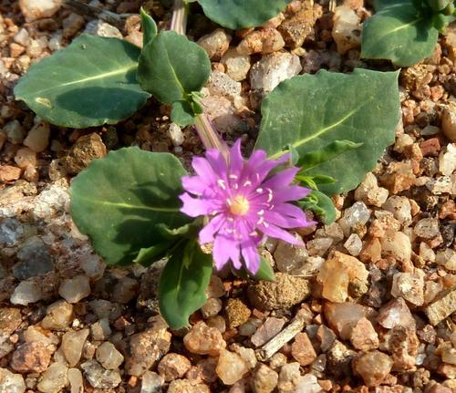

Lophiocarpaceae
(No widely accepted common name)
Lophiocarpaceae is a small family of flowering plants belonging to the order Caryophyllales. It includes only two genera, Lophiocarpus and Corbichonia, comprising about 6-7 species of herbs or subshrubs. These plants are native to arid and semi-arid regions of Africa and extend eastward to the Middle East and India.
Overview
Lophiocarpaceae is a relatively recently recognized family, segregated from other families within the diverse Caryophyllales order (which includes cacti, carnations, amaranths, and ice plants) based on molecular phylogenetic evidence. The family consists of just two genera: Lophiocarpus (with about 5-6 species) and Corbichonia (with 1-2 species).
These plants are typically annual or perennial herbs or small subshrubs adapted to dry, sandy, or disturbed habitats in Africa, the Arabian Peninsula, and eastward to Pakistan and India. They often have slightly succulent leaves and small, inconspicuous flowers. The two genera are distinguished primarily by their fruit types: Lophiocarpus produces single-seeded, often winged or crested achenes/utricles, while Corbichonia produces many-seeded capsules that open via a lid (circumscissile).
The family has little direct economic importance but is significant for understanding the evolutionary relationships within the Caryophyllales.
Quick Facts
- Scientific Name: Lophiocarpaceae
- Common Name: None widely used
- Number of Genera: 2 (Lophiocarpus, Corbichonia)
- Number of Species: Approximately 6-7
- Distribution: Africa, Middle East to India; arid/semi-arid regions.
- Evolutionary Group: Core Eudicots - Caryophyllales
Key Characteristics
Growth Form and Habit
Plants are annual or perennial herbs or subshrubs (small, partially woody shrubs). Stems may be erect or prostrate (lying flat). Some species exhibit slight succulence.
Leaves
Leaves are usually alternate (though sometimes appearing opposite near the base or inflorescence), simple, and typically have entire (smooth) margins. They are often somewhat fleshy or reduced in size. Stipules are generally absent or minute and inconspicuous.
Inflorescence
Flowers are borne in terminal or axillary raceme-like or cyme-like inflorescences, sometimes appearing leaf-opposed. Flowers are generally small.
Flowers
Flowers are small, actinomorphic (radially symmetrical), and usually bisexual (though unisexual flowers can occur in Lophiocarpus). Key features include:
- Perianth: Consists of usually 5 (sometimes 4) undifferentiated segments called tepals. These are often greenish, whitish, or pinkish, sometimes appearing somewhat petal-like (petaloid), and they typically persist and enclose the fruit.
- Androecium: Stamens vary in number, from few (e.g., 4-5, alternating with tepals) to moderately numerous (up to ~20). Small staminodes (sterile stamens) may sometimes be present, alternating with the fertile stamens. Filaments are usually free or slightly fused at the very base.
- Gynoecium: The ovary is superior. The structure differs significantly between the two genera:
- Lophiocarpus: Ovary composed of a single carpel (monocarpellary), containing a single locule with one ovule attached at the base (basal placentation).
- Corbichonia: Ovary composed of two fused carpels (syncarpous), usually with a single locule (or incompletely 2-locular) containing several to many ovules attached to a free-central or basal placenta.
Fruits and Seeds
Fruit type is a key distinguishing feature between the genera:
- Lophiocarpus: The fruit is a dry, single-seeded, indehiscent fruit, technically an achene or utricle (differing in how tightly the pericarp adheres to the seed). It is often enclosed by the persistent tepals and associated bracts, and frequently develops distinctive wings or crests derived from these surrounding structures, likely aiding dispersal.
- Corbichonia: The fruit is a dry, many-seeded capsule that dehisces (opens) via a circular lid detaching around the circumference (circumscissile dehiscence).
Seeds are small.
Chemical Characteristics
The family is not particularly noted for unique or potent secondary metabolites like some other Caryophyllales (e.g., betalains in core families, saponins in Caryophyllaceae) or the alkaloids seen in previous examples (Loganiaceae).
Field Identification
Identifying Lophiocarpaceae requires attention to habit, habitat, leaf arrangement, floral structure (especially the perianth and ovary), and particularly the fruit type:
Primary Identification Features
- Habit and Habitat: Small herbs or subshrubs found in arid/semi-arid regions of Africa and southwestern Asia.
- Alternate, simple leaves: Leaves usually arranged alternately, often somewhat fleshy.
- Small flowers with tepals: Flowers have 4 or 5 greenish or whitish, undifferentiated perianth segments (tepals), not distinct sepals and petals.
- Superior ovary: Ovary positioned above the perianth attachment.
- Distinctive fruit types (key for genus):
- Lophiocarpus: Single-seeded achene/utricle, often winged/crested and enclosed by persistent tepals/bracts.
- Corbichonia: Many-seeded capsule opening with a circular lid (circumscissile).
Secondary Identification Features
- Stamen number: Variable, few to many.
- Carpel number: 1 in Lophiocarpus, 2 in Corbichonia.
Seasonal Identification Tips
- Flowering/Fruiting Season: Typically occurs after seasonal rains in arid environments. Fruits are essential for distinguishing the genera and are often more persistent than the small flowers.
Common Confusion Points
Lophiocarpaceae might be confused with members of other families in the Caryophyllales common in arid regions:
- Amaranthaceae (Amaranth Family): Many herbs/subshrubs with small flowers often subtended by persistent bracts, but flowers typically have dry, scarious (papery) tepals, and fruits are usually utricles or circumscissile capsules (like Amaranthus), but ovary structure differs. Often have C4 photosynthesis.
- Aizoaceae (Ice Plant Family): Often succulent herbs/shrubs with alternate or opposite leaves. Flowers can have few tepals but often numerous petal-like staminodes and/or stamens. Ovary usually inferior or half-inferior, fruit typically a loculicidal capsule.
- Phytolaccaceae (Pokeweed Family): Can have racemes of small flowers with tepals, but often have berries (Phytolacca) or different fruit types, and ovary structure varies (often multiple carpels).
- Caryophyllaceae (Carnation Family): Usually have opposite leaves, flowers typically with distinct sepals and often notched petals (if present), superior ovary usually with free-central placentation, fruit a capsule opening by teeth or valves.
Field Guide Quick Reference
Look For:
- Herbs/subshrubs in arid Africa/Asia
- Alternate, often fleshy leaves
- Small flowers with 4-5 tepals
- Superior ovary
- Fruit: Winged/crested achene (Lophiocarpus)
- Fruit: Circumscissile capsule (Corbichonia)
Key Variations:
- Carpel number (1 vs 2)
- Ovule number (1 vs many)
- Fruit type (achene/utricle vs capsule)
- Stamen number (few vs many)
Notable Examples
The family contains only two genera:

Lophiocarpus spp.
(No common name)
This genus includes several species of herbs or subshrubs found in drier parts of Africa and the Middle East. They are characterized by having a single carpel producing a single-seeded fruit (achene or utricle) which often develops prominent wings or crests from the surrounding persistent floral parts.

Corbichonia decumbens
(No common name)
This species (and potentially one other) forms the genus Corbichonia. It is a somewhat succulent, often prostrate annual or perennial herb found across Africa, the Middle East, and into India. It is distinguished by its ovary of two fused carpels producing a many-seeded capsule that opens with a distinct circular lid (circumscissile).
Phylogeny and Classification
Lophiocarpaceae belongs to the large and diverse order Caryophyllales, which is part of the Core Eudicots (not Asterids like the previous examples Loasaceae and Loganiaceae). This order is known for adaptations to extreme environments and unique biochemical pathways (like betalain pigments in the core group).
Within Caryophyllales, Lophiocarpaceae is placed in a clade that also includes families like Limeaceae, Stegnospermataceae, and is related to the broader group containing Phytolaccaceae and Nyctaginaceae. It is more distantly related to the core Caryophyllales clade which includes Amaranthaceae, Caryophyllaceae, Aizoaceae, and Cactaceae. Its recognition as a distinct family helps resolve phylogenetic relationships within this complex order.
Position in Plant Phylogeny
- Kingdom: Plantae
- Clade: Angiosperms (Flowering plants)
- Clade: Eudicots
- Clade: Core Eudicots
- Order: Caryophyllales
- Family: Lophiocarpaceae
Evolutionary Significance
Lophiocarpaceae, though small, is significant for:
- Phylogenetic placement: Helps clarify relationships within the early-diverging lineages of the Caryophyllales order.
- Adaptation to aridity: Represents a lineage adapted to dry environments in Africa and Asia.
- Fruit morphology: The distinct fruit types (winged achene vs. circumscissile capsule) between the two genera illustrate evolutionary divergence in dispersal mechanisms within a small family.
- Gynoecium evolution: The presence of both monocarpellary (Lophiocarpus) and syncarpous (Corbichonia) ovaries in closely related genera is of evolutionary interest.